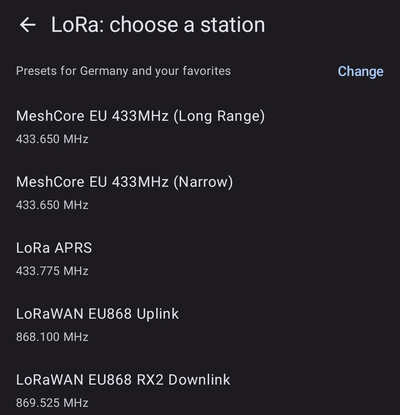
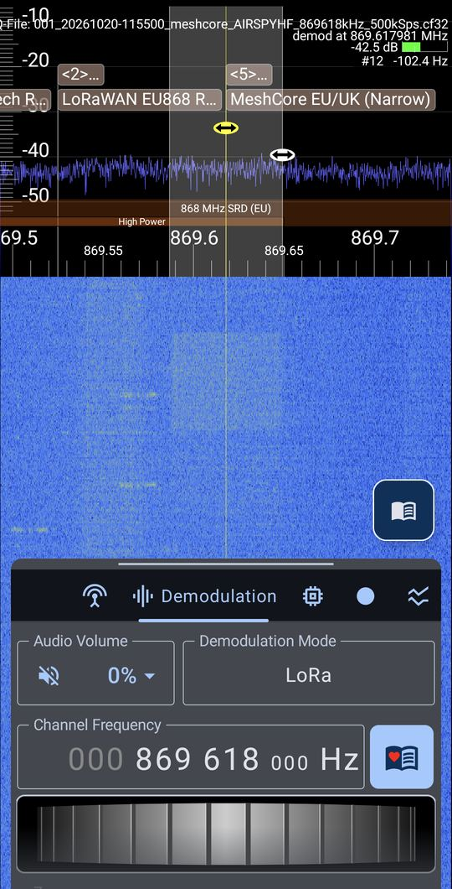
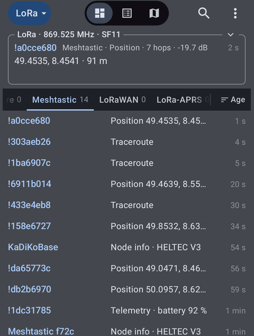
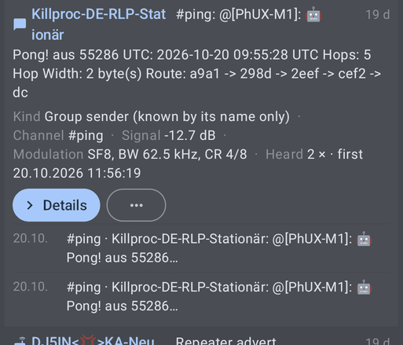
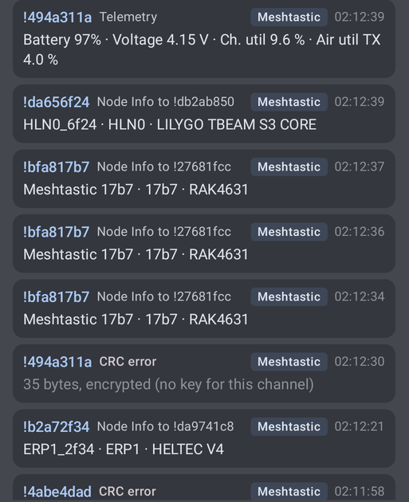
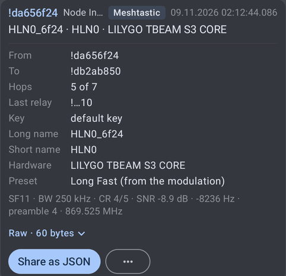

LoRa
LoRa is a radio modulation for long range at very low power. Small battery devices use it to send a few bytes over several kilometres, and several popular networks are built on it: the MeshCore and Meshtastic mesh messengers, LoRaWAN (the Internet of Things network behind countless sensors, meters and trackers), and for radio amateurs MeshCom (a mesh for text and positions) and LoRa-APRS (position reports).
RF Analyzer receives LoRa, decodes every frame in the channel and shows what the five networks send: mesh nodes with their names, positions, battery and sensor readings, text messages on public channels, the routes messages take through the mesh, and LoRaWAN devices. It only receives; it does not transmit.
All you need is an SDR that covers the band in use (868 MHz in Europe, 915 MHz in the Americas, 433 MHz for MeshCom and LoRa-APRS) and a suitable antenna. LoRa is part of the Digital Extension, which must be installed.
How LoRa Works
Chirps
A LoRa signal is made of chirps: tones that sweep across the whole channel from the lowest to the highest frequency. Each symbol is a chirp that starts at a different frequency, and where it starts carries the data. In the waterfall a LoRa frame looks like a block filling the channel's width, made of diagonal lines (see the screenshot under Controls).
Every frame starts with a preamble of identical chirps, so that receivers can find it, followed by the sync word, which tells the networks apart: 0x12 for MeshCore and LoRa-APRS, 0x2B for Meshtastic, 0x34 for LoRaWAN.
Spreading factor and bandwidth
Two settings define a LoRa channel:
- The bandwidth: how wide the chirps sweep, usually 125 kHz (LoRaWAN, LoRa-APRS), 250 kHz (Meshtastic's default) or 62.5 kHz (MeshCore in Europe).
- The spreading factor (SF7 to SF12): how long each chirp is. Each step doubles the duration, which makes the signal about 2.5 dB more robust but halves the data rate.
This is what makes LoRa reach so far: frames can be decoded well below the noise, down to about -10 dB signal-to-noise ratio at SF7 and -20 dB at SF12. A frame also carries a coding rate (error correction, 4/5 to 4/8) and usually a checksum (CRC) over its content.
The networks
| Network | What it is | Content |
|---|---|---|
| Meshtastic | Off-grid text messenger; every node relays messages for the others | Messages on the public default channel can be read; others are encrypted |
| MeshCore | Mesh messenger with fixed repeaters and room servers | Node announcements (adverts), public and hashtag channel messages |
| LoRaWAN | IoT network: sensors and meters talk to gateways of a network operator | Device address, frame counter and a few control fields; the data itself is encrypted |
| MeshCom | Amateur radio mesh: text messages and positions, relayed by every node, with gateways to the internet | Everything: amateur radio may not encrypt |
| LoRa-APRS | Amateur radio position reports, like APRS on 2 m | Callsign, position, comment |
Where to find LoRa
Common channels in Europe (the presets for Europe tune to these):
| Network | Frequency | Bandwidth | Spreading factor |
|---|---|---|---|
| Meshtastic (LongFast) | 869.525 MHz | 250 kHz | SF11 |
| MeshCore (EU/UK Narrow) | 869.618 MHz | 62.5 kHz | SF8 |
| LoRaWAN uplinks (devices) | 868.1, 868.3, 868.5 MHz | 125 kHz | SF7–SF12 |
| LoRaWAN downlinks (gateways) | 869.525 MHz | 125 kHz | SF12 (often SF9) |
| MeshCom | 433.175 MHz | 250 kHz | SF11 |
| LoRa-APRS | 433.775 MHz | 125 kHz | SF12 |
In the Americas, Meshtastic's default channel is at 906.875 MHz (250 kHz). Activity depends a lot on where you are: mesh networks are busiest in and around cities.
Getting Started
The quickest way to start is the mode button in the header of the Digital tab: tap it, tap › next to LoRa and pick a network. RF Analyzer selects the LoRa mode, tunes to the channel, sets its bandwidth and starts the analyzer; the Overview shows the section of the first frame received. Select and set up your source first in the Source tab.

You can also set it up by hand: select LoRa as the demodulation mode in the Demodulation tab, set the channel frequency and the channel bandwidth of the network you want to receive.
Frames appear as soon as they are received. Mesh nodes announce themselves every few hours, but most networks carry some traffic every minute.
Controls in the Demodulation Tab

- Channel Frequency: the centre frequency of the LoRa channel. The channel is the grey area in the spectrum.
- Channel Bandwidth: must match the network's bandwidth (see Where to find LoRa): frames of another bandwidth are not decoded.
- Spreading Factor: Auto (the default) searches SF7 to SF12 at once. Select one or more spreading factors instead to search only those - SF5 and SF6 are searched only when selected. Fewer spreading factors need less CPU; frames with other spreading factors are missed.
- Chirp Direction: Auto (the default) receives both directions. Normal receives what devices send (MeshCore, Meshtastic, LoRa-APRS, LoRaWAN uplinks), Inverted what LoRaWAN gateways send (downlinks). One direction needs less CPU.
- Edit MeshCore Hashtag Channels: MeshCore's hashtag channels (
#ping,#test, …) derive their key from the channel name, so anyone who knows the name can read them. Add the names of the channels used in your area to read their messages (see below).
All three sync words are searched. Leave the spreading factor and chirp direction on Auto unless you know what you are looking for, or your phone is too slow for Auto (see Troubleshooting).
MeshCore Hashtag Channels
Edit MeshCore Hashtag Channels opens the list of hashtag channels RF Analyzer tries in addition to its built-in ones:
- Type a channel name (with or without
#) and tap Add. - Paste from clipboard adds several names at once (one per line, or separated by commas); Copy to clipboard copies your list, for example to share it with a friend.
- The trash icon removes a channel, Delete all empties the list.
The Public channel and a set of common hashtag channels (#test, #ping,
#echo, #mesh, #meshcore, #hamradio, #weather, #emergency, #news
and a few more) are always active and not listed. RF Analyzer also tries a
built-in dictionary of about 2000 channel names used in Europe and North
America; a match counts only if the message decrypts to readable text.
When you add a channel, RF Analyzer decrypts the stored messages of that channel too, so messages received before you added it appear as well.
What RF Analyzer Decodes
- Meshtastic: text messages, positions, node information (name, hardware, role), telemetry (battery, voltage, channel utilisation, temperature, humidity, pressure, air quality, power, the node's own network statistics), neighbour lists with signal strengths, traceroutes (the route a message took and the SNR of every hop), acknowledgements and waypoints. Readable are the default channel of every preset and channels with the simple keys; private channels and direct messages stay encrypted.
- MeshCore: node adverts with name, type (chat node, repeater, room server, sensor) and position, each checked by its digital signature; messages on the Public channel and the hashtag channels you added; traces with the SNR of every hop; node discovery. Private messages, logins and requests are encrypted - RF Analyzer shows who they are addressed to (as a short hash) and their size.
- LoRaWAN: message type, device address and network operator, frame counter, port, control commands, join requests with the device's EUI and its manufacturer. The application data is encrypted.
- MeshCom: text messages to everyone, to a group or to a callsign, and their acknowledgements; position beacons with APRS symbol, comment, battery, altitude and the readings of weather sensors; the HEY beacons in which every node and gateway announces itself, with the signal reports of the relays; neighbour reports; the MeshCom server's time beacon. Every frame shows the route it took (the callsigns of the relays).
- LoRa-APRS: callsign, path, position, symbol and comment.
In the Digital Tab
The decoded frames show up in the Digital tab. That page explains the controls all modes share; here is what LoRa's sections, rows and cards mean.
Sections and the ticker

The Overview has one section per network, selected with the tabs in the header line: MeshCore nodes, Meshtastic nodes, MeshCom stations, LoRaWAN devices and LoRa-APRS stations. A dot marks a section that has received something since you last looked at it. After a start, the Overview switches to the section of the first frame received.
While LoRa is received, the ticker above the sections shows the newest frame of any network: who sent it, the network, the message type, how many hops it took, its signal-to-noise ratio and its content. Its label shows the spreading factor of that frame. Tap the ticker to see a list of the session's last frames.
Each row shows the node's name (or address), what it sent last and when. Sort the rows by Last heard, Frames (how many frames it sent), Signal (SNR) (of its last frame) or Name.
Only intact frames count towards a node. A frame with a CRC error is shown in the Raw view, but doesn't create or change a node: a damaged address would otherwise show up as a node that doesn't exist. Frames without checksum (LoRaWAN downlinks) count when the receiver is sure about every bit. MeshCore checks its frames itself: an advert counts only with a valid digital signature, a channel message with a valid authentication code, and MeshCom by the checksum every frame carries.
MeshCore
- Rows are nodes, identified by their public key and shown with the name from their advert and an icon for their type: person (chat node), router (repeater), globe (room server), sensor. A row with a speech bubble is a group sender: someone heard only through channel messages, known by the name they put in their messages. That name can't be verified, so a group sender is listed separately from a node of the same name.
- The row says what the node sent last: "Repeater advert", or a channel message as "#test: Hello".
- The summary counts repeaters, room servers and nodes with a position.
- Opened: the node's Kind, Position (from its advert), the Channel of a group sender, Signal (SNR of its last frame), Modulation and its Public key.

Meshtastic
- Rows are nodes, identified by their node number (
!1c4977b0) and shown with their long name once they sent their node information. - The row says what the node sent last: a text message, its position, its node information ("Node info · HELTEC V3"), "Telemetry · battery 87 %", or "Encrypted (no key for this channel)" for a private channel.
- The summary counts the nodes with a position.
- Opened: Node number, Short name, Hardware, Role (Client, Router, Tracker, Sensor, …), Position, Battery (101 % means it runs on external power) and voltage, Uptime, Environment (temperature, humidity, pressure from its sensors), Neighbours (the nodes it hears directly, with their SNR) and whether it is Licensed (a radio amateur running without encryption).
MeshCom
- Rows are stations, identified by their callsign, with the APRS symbol of their position beacon.
- The row says what the station sent last: a text ("group 262 · Hello"), its position with comment, battery and altitude, "HEY · hears 4 stations", or "Server time beacon".
- A frame relayed by other stations counts for its sender, and also for the relay it was heard from: its signal (SNR) is the relay's, so a station's Signal comes only from frames it sent or relayed itself. Opened, a relay lists the frames it relayed.
- The summary counts the stations with a position and the gateways.
- Opened: Position, Name and Comment from its beacon, Battery, Altitude, the weather readings (Temperature, Humidity, Pressure, …), Neighbours (how many stations it hears directly), Groups it is in, whether it is a Gateway (connected to the MeshCom server on the internet), its Hardware and Firmware, how many frames it Relayed, Signal and Modulation.
- A frame opened shows its Path (from the sender over every relay), the Message ID (the same in every relayed copy), the hops left, its flags and the sender's hardware and firmware.
LoRaWAN
- Rows are devices, identified by their device address (DevAddr, 8 hex digits), which the network assigns when the device joins. A device heard only while joining is listed by the end of its device EUI ("EUI …4A30F1C2"); after joining it gets a new address and a new row.
- The row shows the type of its last frame and its port ("Uplink · FPort 2"); FCnt is its frame counter, which counts up with every frame it sends, and SNR how well the device is heard.
- Opened: the Network operator (from the device address), the DevEUI and JoinEUI of a join request with the manufacturer where known, and the last Downlink the network sent to the device (its type, port, the network's own frame counter and how well the gateway is heard) - kept apart from the device's frames, so the two counters don't mix.
- LoRaWAN encrypts the content: RF Analyzer shows who sends and when, not what.
LoRa-APRS
Works like APRS on 2 m: rows are stations with their APRS symbol, position and comment; see AX.25 / APRS for what the fields mean.
Frames

The Raw view shows every frame as a card: the sender, the message type (and the addressee of a direct message), the network as a tag, the time, and the content. Two red words warn you:
- CRC error: the checksum doesn't match, some bytes are wrong. Don't trust the content.
- Unreliable: sent without checksum and received too weakly to be sure.
- Bad signature (MeshCore adverts): the digital signature is wrong.
Encrypted content is shown in grey ("44 bytes, encrypted (no key for this channel)"). Tap a card for all decoded fields:

- Meshtastic: From, To (Broadcast or a node), Hops ("5 of 7": hops taken of the limit it was sent with), Last relay (the last byte of the node that relayed it last), Key (the default key or a simple key decrypted it), then the content: text, position, node info, every telemetry reading, neighbours, the route of a traceroute. Preset is the Meshtastic modem preset that fits the frame's modulation (a guess from the modulation).
- MeshCore: for a channel message the sender, the Channel and when it was Sent by the sender's clock; for an advert the name, type, position, time and whether its Signature is valid. Route shows how the frame travels (flood or direct) and the repeaters it passed, each as a short hash of its key. Encrypted direct messages show only the short hashes of sender and addressee.
- LoRaWAN: message type, network, device and join EUIs, flags, every MAC command (control commands between device and network) and the Data rate (EU868 table).
The grey radio line describes the reception: spreading factor (SF), bandwidth (BW), coding rate (CR), the SNR in the LoRa bandwidth, the transmitter's frequency error, the number of preamble chirps received (a hint at the network: MeshCore sends 32, Meshtastic 16, LoRaWAN 8), IQ inverted for downlinks, the checksum state ("no CRC, reliability 0.999" for frames sent without one) and the channel frequency.
Map
The Map shows every node and station with a known position: Meshtastic nodes that sent their position, MeshCore nodes whose advert includes one, and LoRa-APRS stations. Tap a marker to see its details and recent frames. LoRaWAN devices don't transmit a position.
Tips & Troubleshooting
Nothing is decoded
- Check the waterfall for LoRa frames in the channel (blocks filling the grey area). Frames can be decoded even when they are hard to see.
- Check the channel bandwidth: it must match the network's.
- Use a good antenna for the band, outdoors or near a window if you can. Most LoRa traffic is weak and short, so give it a few minutes.
Many frames with CRC error
These frames are just at the edge of reception. A better antenna, a filter or an amplifier for the band helps.
The processing overload indicator appears
LoRa decoding needs more computing power the wider the bandwidth is. At 500 kHz an older phone may not keep up; at the usual 62.5 to 250 kHz all current phones do.
MeshCore or Meshtastic messages stay encrypted
They are on a private channel or addressed to a single node. Only public channels, MeshCore hashtag channels whose name you added, and Meshtastic channels with a default or simple key can be read.